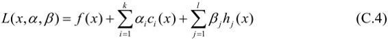
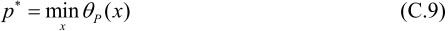
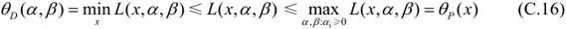
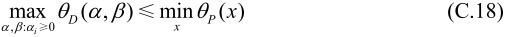

，若某个j使hj(x)≠0，则可令βj使βjhj(x)→+，而将其余各ai，βj均取为0。
，若某个j使hj(x)≠0，则可令βj使βjhj(x)→+，而将其余各ai，βj均取为0。附录C 拉格朗日对偶性
在约束最优化问题中，常常利用拉格朗日对偶性（Lagrange duality）将原始问题转换为对偶问题，通过解对偶问题而得到原始问题的解。该方法应用在许多统计学习方法中，例如，最大熵模型与支持向量机。这里简要叙述拉格朗日对偶性的主要概念和结果。
1．原始问题
假设f(x)，ci(x)，hj(x)是定义在Rn上的连续可微函数。考虑约束最优化问题
称此约束最优化问题为原始最优化问题或原始问题。
首先，引进广义拉格朗日函数（generalized Lagrange function）

这里，x＝(x(1),x(2),…,x(n ))T∊Rn，ai，βj是拉格朗日乘子，ai≥0。考虑x的函数：
这里，下标P表示原始问题。
假设给定某个x。如果x违反原始问题的约束条件，即存在某个i使得ci(w)>0或者存在某个j使得hj(w)≠0，那么就有
因为若某个i使约束ci(x)>0，则可令ai→+，若某个j使hj(x)≠0，则可令βj使βjhj(x)→+，而将其余各ai，βj均取为0。
相反地，如果x满足约束条件式（C.2）和式（C.3），则由式（C.5）和式（C.4）可知， P(x)＝f(x)。因此，
P(x)＝f(x)。因此，
所以如果考虑极小化问题
它是与原始最优化问题（C.1）～（C.3）等价的，即它们有相同的解。问题称为广义拉格朗日函数的极小极大问题。这样一来，就把原始最优化问题表示为广义拉格朗日函数的极小极大问题。为了方便，定义原始问题的最优值

称为原始问题的值。
2．对偶问题
定义
再考虑极大化即
问题称为广义拉格朗日函数的极大极小问题。
可以将广义拉格朗日函数的极大极小问题表示为约束最优化问题：
称为原始问题的对偶问题。定义对偶问题的最优值
称为对偶问题的值。
3．原始问题和对偶问题的关系
下面讨论原始问题和对偶问题的关系。
定理C.1 若原始问题和对偶问题都有最优值，则
证明 由式（C.12）和式（C.5），对任意的a,β和x，有

即
由于原始问题和对偶问题均有最优值，所以，

即
推论C.1 设x*和a*,β*分别是原始问题（C.1）～（C.3）和对偶问题（C.12）～（C.13）的可行解，并且d*＝P*，则x*和a*,β*分别是原始问题和对偶问题的最优解。
在某些条件下，原始问题和对偶问题的最优值相等，d*＝P*。这时可以用解对偶问题替代解原始问题。下面以定理的形式叙述有关的重要结论而不予证明。
定理C.2 考虑原始问题（C.1）～（C.3）和对偶问题（C.12）～（C.13）。假设函数f(x)和ci(x)是凸函数，hj(x)是仿射函数；并且假设不等式约束ci(x)是严格可行的，即存在x，对所有i有ci(x)<0，则存在x*,a*,β*，使x*是原始问题的解，a*,β*是对偶问题的解，并且
定理C.3 对原始问题（C.1）～（C.3）和对偶问题（C.12）～（C.13），假设函数f(x)和ci(x)是凸函数，hj(x)是仿射函数，并且不等式约束ci(x)是严格可行的，则x*和a*,β*分别是原始问题和对偶问题的解的充分必要条件是x*,a*,β*满足下面的Karush-Kuhn-Tucker(KKT)条件：
特别指出，式（C.24）称为KKT的对偶互补条件。由此条件可知：若>0，则ci(x*)＝0。